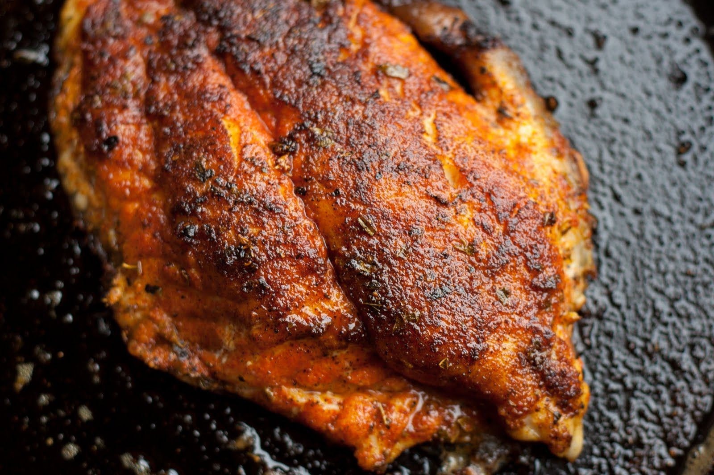

Cajun Blackened Catfish

Best Catfish dish known to man!
This recipe is perfect for anyone who likes fish with a little bit of kick.
Ingredients
- 1 teaspoon kosher salt
- 1 teaspoon ground black pepper
- 1 teaspoon ground cayenne pepper
- 1 teaspoon garlic powder
- 1 teaspoon onion powder
- 1 teaspoon paprika
- 1 teaspoon dried parsley
- ½ teaspoon dried oregano
- ½ teaspoon dried thyme
- 4 (4 ounce) catfish fillets, skinned
- ¾ cup unsalted butter
Cooking Instructions
- Mix together salt, black and cayenne pepper, garlic powder, onion powder, paprika, parsley, oregano, and thyme in a shallow bowl until thoroughly combined. Press catfish fillets into the spice mixture to thoroughly coat.
- Melt butter in a bowl and set aside.
- Arrange a portable heat source outdoors, such as a butane burner or side burner of a gas grill. Light the burner, and place a large cast-iron skillet onto the burner over high heat. Pour about 1/4 cup melted butter into the skillet.
- When butter in the skillet is smoking hot, lay catfish fillets into the skillet. Cook until the spices are burned onto the fillets and the catfish is opaque and flaky inside, about 3 minutes per side. Don't breathe the smoke.
- To serve, pour remaining 1/2 cup butter over the catfish.
Return to Top
Home